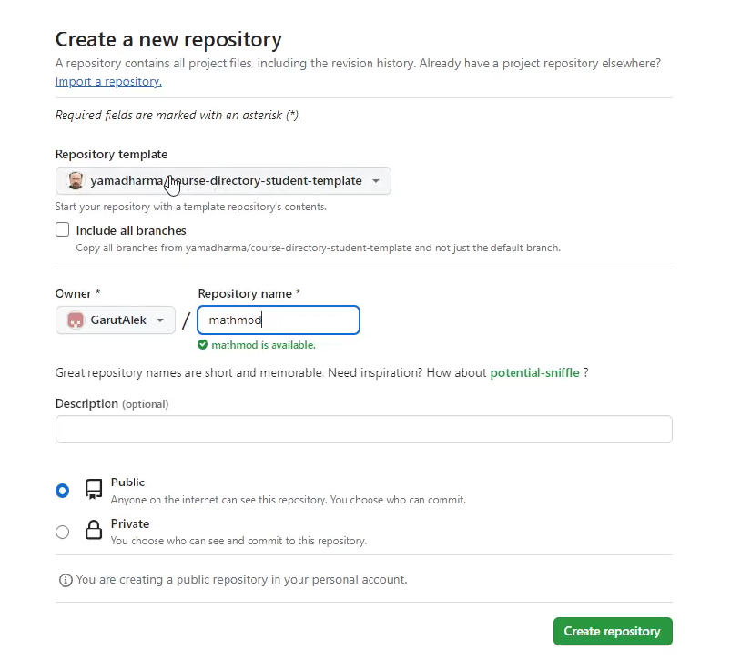
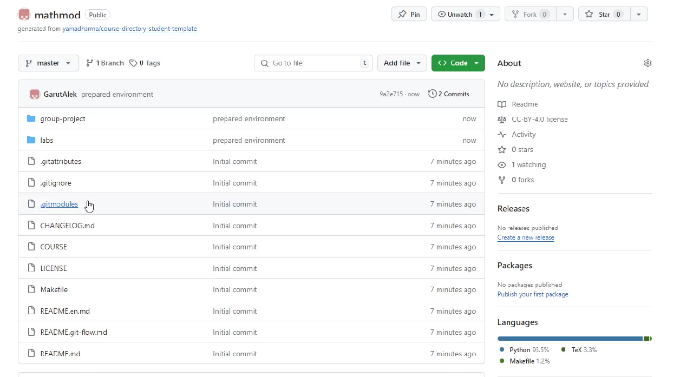

Докладчик
- Гарут Александр Игоревич
- студент группы НФИбд-01-21
- Российский университет дружбы народов
Цели и задачи
- Создать гит репозиторий.
- Создать labs и group-project
Результаты
Создание репозитория
Результаты
Конечный вид
Вывод
Создал репозиторий по шаблону, наполнил необходимыми папками.